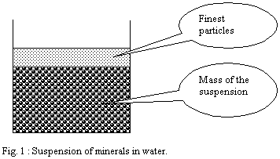
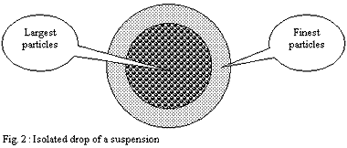
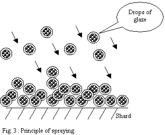
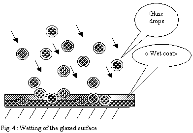
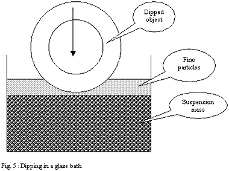
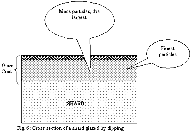
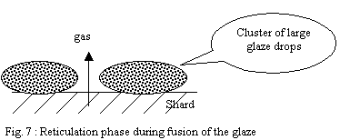
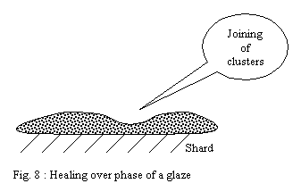
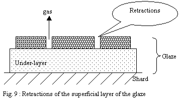
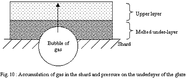

| Surface Tension
and Glazing
by Smart.Conseil
Translated from French by Edouard Bastarache.
Gibbs' Theorem:
According to the principles of thermodynamics, the elements
which make up the surface layer of a solution and those of its
mass are different.
Surface Tension:
It is a force resulting from cohesiveness, which lowers to a
minimum the number of molecules on the surface of a liquid.
This creates a kind of invisible enveloppe which occupies the
smallest possible surface. The surface tension represents the
force of the film on the liquid surface.
When one applies this principle to a minerals suspension, one
can observe that the surface tension of water creates on the
surface a layer which contains the finest particles of the suspension.
This layer is very thin and created spontaneously.

Application to an isolated drop of the suspension:
A drop is a volume of insulated liquid whose cohesion is ensured
by the forces of surface tension. In the absence of external
influence, the drops have a spherical form.

Thus if one applies this reasoning to a drop of this suspension,
the finest particles come to cover the surface of this one and
leave in the centre a mass of a suspension richer in large particles.
Influence of drop size:
Surface of a sphere: 4 p R2
Volume of a sphere: 4/3 p R3
Ratio surface / volume: 4 p R2 / 4/3 p R3 = 3 / R
The ratio of the surface compared to the volume is 3 times the
inverse of the radius of the sphere, which means that the volume
of a drop (sphere) is reduced more quickly than its surface
when its radius decreases.
Ex: drops of 1 mm of radius will have a ratio surface/volume
of 3 cm² per ml of suspension while drops of 0.5 mm of
radius will have a ratio surface/volume of 6 cm² per ml
of suspension.
Thus, for increasingly small drops formed from a suspension
of minerals, these will present an increasingly significant
differential of composition between the minerals of the surface
and those of their mass (heart of the drops). The force of the
surface tension exerting on the surface will impoverish more
and more the mass of its finest minerals, since the volume of
the drops decrease more quickly than their surface.
Glazing
Glazing by spraying:
The principle is to disperse a suspension of drops in the air
in order to direct those towards the surface of the ware to
be glazed. The strong dispersion of the suspension helping with
better controlling the application.

The drops pile up on the surface and form a layer
- If the shard is very porous, the drops
will be solidified progressively as they settle and will form
a powdery heap.
-
If the shard is less porous or if the flow
of pulverization is too important the drops will have time
to form a "wet" layer leaving time necessary to
the partial reorganization of particles under the effect of
surface tension forces.

Glazing by dipping:
One dips the porous shard to be glazed in a bath of glaze in suspension
in water. The capillarity forces of the shard make it possible for
the water to penetrate into this one, attracting and thus plating
minerals of the solution on the porous surface.

The case of dipping differs much from spraying. The layer deposited
by capillarity on the shard is partly made up of the finest particles
attracted onto the surface of the bath by the force of surface tension
of the suspension. These finest and very mobile particles wrap the
dipped ware as it progressively penetrates the glaze bath.
They form, just like a clay slip on the plaster of a mould, a "
super fine casting skin ". But in the case of dipping this
" super fine casting skin " is inserted between the shard
and the external glaze coat made up of the particles of the mass,
larger in size and denser.

Influence of the glazing method on the behavior of the glaze:
The two methods quoted on this page lead to different results during
firing of the glaze. The forces of surface tension play a dominating
role in the results by allowing a layout and a different selection
of the particles deposited on the shard. The aspect of the fired
layer and the dynamics of its fusion during firing will be different
according to the method used.
Thus for the same composition of a glaze (identical minerals in
same the proportions) fired in an identical cycle of firing one
will be able to observe:
1) Spraying:
a) powdered layer:
The powdered layer is made up of glaze granules of different sizes,
each one covered by a thin layer of fine particles. The fine particles
melt in the first place and quickly attack the mass of less bulky
drops. Thus small drops melt before the largest and start the heterogeneous
fusion of the glaze, forming fusible points distributed in all the
mass of the product.
These fusible points accelerate the fusion of slightly larger drops
located near their vicinity and so on. It follows a phenomenon of
reticulation of the layer leading to clusters in large viscous molten
drops. This discontinuous layer is permeable and allows gases located
in the shard to escape easily.
With temperature rising, the forces of surface tension are slowly
slackened, making it possible to clusters to join and form a continuous
layer. This last phase in general makes it possible to obtain glaze
healing over by carrying out a stage of firing at the highest temperature
during a certain time.


b) Wet layer of sprayed glaze:
The wet layer is a tangle of drops whose continuity produced in
the upper part at the time of wetting made it possible that the
finest particles form a layer under the action of the forces of
surface tension. Thus part of the fine particles had the time to
organize on the surface of the layer and form a smooth and compact
"skin".
During firing, this compact surface layer will begin to melt before
the whole of the layer and will undergo strong contractions under
the effect of shrinking and the high surface tension of the glaze
in formation. The under-layers being at a stage of less advanced
softening, the cohesion of this not very homogeneous mixture will
allow ruptures of the layer in fusion leading to cracks and retractions.
These discontinuities of the layer of the glaze will allow gases
to escape. Then the temperature continuing to rise, the whole will
end up forming a continuous layer and heal over.

2) Dipping:
The layer of the finest particles in direct contact with the shard
will melt in first place. The strong cohesion of the shard will
prevent the retraction of the softened layer and this one will form
a relatively continuous and tight envelope. The gases which will
want to escape the shard will have trouble to find a way through
the layer of the glaze and will accumulate.
If the layer of the glaze is thin, discontinuities (small holes)
will let gases leave more erasily.
If it is thick, discontinuities will be rare and the pressure of
the gases will rise up to reach and exceed the bearable limit of
the layer of the glaze strongly softened by temperature. Large bubbles
will explode on the surface, producing craters of a few millimetres.

For this reason, the pieces produced by dipping will have to be
subjected to a rigorous control of the thicknes of the glaze, especially
if the shard produces gases during firing. A very detailed attention
will have to be paid to the granulometry and the grinding of the
glaze.
©
Smart.Conseil, smart2000@wanadoo.fr
Many thanks to Smart.Conseil
for this and previous contributions.
Related Pages:
Ceramic Toxic Materials
More Articles
|